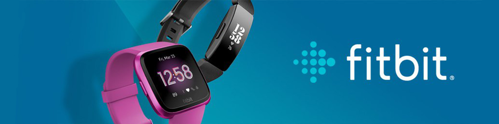

About Me
Hi, I am Harrison Howard (aka
Forbidden Duck
or
Duck
).
As of June 2021, I am 19 years old.
I have been coding since I was 13 years old.
The first language I learnt was C# and I made Pong with Unity.
After that I found a new love for coding as I could create anything I wanted.
I spent 2 years learning and creating with Unity until I discovered Discord.
In 2017 I discovered that I could create Discord Bots using JavaScript.
JavaScript is my favourite language to date. My first and only Discord Bot
is Forbidden. Originally it was a multi-purpose bot which means it could
do close to anything. In 2020 I decided to switch Forbidden to a more
focused theme Statistics and it is now named Forbidden Statistics.
This is where the bot remains.
I learnt so much from creating a Discord Bot and I went off creating
side-projects with JavaScript. I wanted to expand my knowledge of
JavaScript so I checked out Codecademy. Codecademy showed me sides of
JavaScript I had not previously known about and it opened my eyes to new
possibilities. This is when I was introduced to ReactJS and AngularJS.
I have learnt a lot of the years and now I am looking for entry level jobs
for Full-stack Website Development that involve JavaScript development with
ReactJS or AngularJS (not limited to, I am interested in learning new
technologies should they arise).

Forbidden Statistics
Forbidden is a General Statistics Discord Bot.
It provides statistics on Discord and games.
Some of the games included are League of Legends,
Overwatch, Call of Duty and Counter Strike: Global
Offensive (CSGO).
Forbidden is constantly being worked on and can be
found at the following links.
Discord Bot Invite
Discord Bot List
Github

Fitbit Projects
In December of 2020 I was gifted a Fitbit Versa 2.
I then went on to learn how the Fitbit SDK worked
and proceeded to apply my knowledge on creating
clockfaces and apps.
A collection of my creations can be found below.
Every free clockface/app can be found on my Github.
Fitbit Developer
My Github

Side Projects
My Github is populated with plenty of repositories. It doesn't
just include my personal/side projects you will find my
Diploma of Software Development and Codecademy projects too.
More notable repositories are
eris.js-commando
&
forbidden-node-logger
My Github